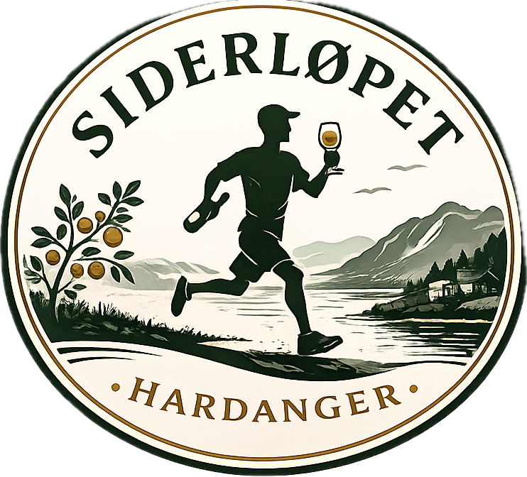

Vestsiden av Sørfjorden · Hardanger
Neste Siderløp arrangeres sommeren 2027. Dato kommer – meld din interesse allerede nå.
Meld interesse →Om arrangementet
Siderløpet er et løpsarrangement i Hardanger der løping, lokal sider og gode opplevelser går hånd i hånd.
Underveis går turen innom lokale siderprodusenter, hvor deltakerne får oppleve sidertradisjonen, kulturlandskapet og Hardanger på nært hold.
Det handler ikke først og fremst om å komme raskest til mål. Det handler om å løpe, smake, oppleve og ha en skikkelig fin dag sammen.
Første gjennomføring ble arrangert privat i august 2026. Nå jobber vi med å utvikle konseptet videre for sommeren 2027.
Siderløpet 2027
Neste Siderløp planlegges sommeren 2027. Endelig dato kommer senere.
Første gjennomføring var privat. I 2027 er ambisjonen å åpne arrangementet for langt flere deltakere.
Ruten for 2027 er ikke bestemt. Vi bygger videre på erfaringene fra testløpet i 2026.
Lokale siderprodusenter skal fortsatt være en sentral del av opplevelsen. Hvilke gårder og hvor mange stopp det blir, kommer senere.
Målet er fortsatt det samme: en fantastisk dag med løping, sider, natur og godt selskap.
Vi jobber med videreutviklingen av Siderløpet og har kanskje noen spennende nyheter på lur. Mer informasjon kommer fortløpende.
Historien om Siderløpet
Ideen er inspirert av løp som kombinerer løping med gode lokale smaksopplevelser. Vi tok med oss ideen hjem og gjorde den til vår egen – med Hardanger, sidergårder og lokal sider som hovedingredienser.
Vi meldte oss på Marathon du Médoc i Frankrike og begynte å kombinere mer målrettet løpetrening med rødvin rundt omkring i Bergen.
Etter deltakelsen på Marathon du Médoc bestemte vi oss for å ta med oss ideen hjem – til Vestlandet, fjordene og den stolte sidertradisjonen i Hardanger.
Domenet siderløpet.no ble kjøpt, og siden har ideen gradvis blitt utviklet til et faktisk arrangement.
I august gjennomførte vi endelig første Siderløp som en privat test.
Testløpet 2026
Her kan du se ruten og siderstoppene som ble brukt under den private testgjennomføringen i august 2026.
Testløpet 2026
Kartet viser ruten og siderstoppene fra den private testgjennomføringen i august 2026.
Det gir et innblikk i hvordan det første Siderløpet ble lagt opp. Ruten og siderstoppene for 2027 er fortsatt under utvikling.
Neste løp
Første Siderløp er gjennomført – og vi er allerede i gang med planleggingen av neste.
Neste år åpner vi for langt flere deltakere. Datoen er ikke satt ennå, og ruten, siderstoppene og øvrige detaljer er fortsatt under utvikling.
Meld interesse nå, så blir du blant de første som får vite mer når planene begynner å falle på plass.
Det tar under ett minutt å melde interesse.